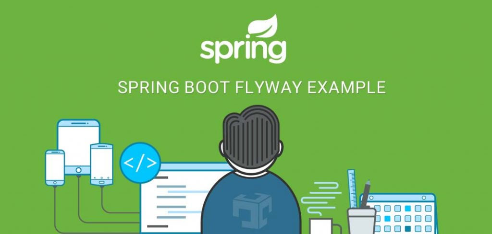
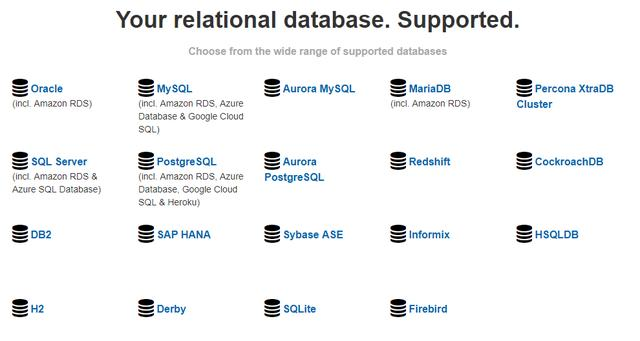
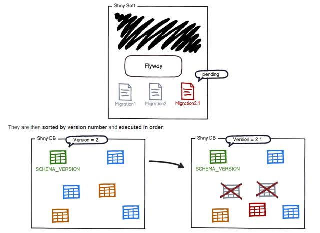

Flyway是一个开源的数据库版本管理工具，并且极力主张“约定大于配置”，简单、专注、强大。可以使用SQL完成数据同步，或者基于特定数据库的语法（例如PL / SQL，T-SQL等）或Java代码（适用于高级数据转换或处理LOB）的方式编写。并且数据库支持非常广泛：

那么，我们首先解释一下什么是数据库版本管理？
举个简单的例子：
那么问题就来了：我们如何保证数据库schema的状态一致？某一个开发人员修改了开发库，新增了一个字段，如何能够有效的同步到测试库，测试通过之后如何有效的同步到演示库和生产库？在没有Flyway之前，这个动作通常是由上线程序员自己去执行SQL来完成的，或者比较正规的公司专门有版本管理人员去操作。这种方式通常存在几个问题：
这也就是我们学习Flyway的目的：Flyway能够自动的帮助我们有效的同步各个发布数据库之间的状态，不管你是加了或者删了一个字段，还是新加了一张表，他都能自动化的跟随项目的发布同时发布。
首先，我们为SpringBoot项目添加Flyway依赖
<dependency>
<groupId>org.flywaydb</groupId>
<artifactId>flyway-core</artifactId>
<version>6.0.7</version>
</dependency>然后我们要保证数据库里面有spring.datasource的数据源配置。并且在application.properties中添加如下的配置
spring:
flyway:
enabled: true #启用flyway
encoding: utf-8 #字符编码
locations: ["classpath:db/migration"] #版本控制文件存放目录然后在resources/db/migration目录下面，加入如下格式的脚本：
V1.1__create_table.sql
V1.2__update_person_table.sql
V1.3__create_new_table.sql
V1.4__add_person_comment.sql
V2.1__modify_person_data.sql大写V后面紧跟数据库脚本的版本号（递增形式、不能重复），然后两个下划线，之后是对脚本内容进行描述。如：V1.1__create_table.sql是用于创建表结构的数据库脚本，内容是create table之类的DDL。 第二个脚本是对数据库中person表进行了更新。总之脚本里面的内容，就是你希望对spring.datasource代表的数据库进行的操作，可以是表的创建、删除、修改，也可以是对数据的创建删除修改。
当然，我个人不建议将DML-SQL写入脚本，也就是不要在这个脚本里面写insert、update、delete。以免不注意的情况下，造成生产数据的误操作。如果你们公司在生产上线管理方面没有严格的审核程序，在生产环境下，就干脆不要使用flyway，方便开发是一方面，生产安全更为重要！
最后，启动SpringBoot项目，在该目标库范围内没有执行过的SQL脚本被执行。并将脚本执行信息保存在数据库的schema_version_history数据表里面。

然后去schema_version_history表里面找对应的版本执行信息，如果你的文件版本号大于数据库记录版本，就执行脚本。否则就忽略。
本文转载注明出处（必须带连接，不能只转文字）：字母哥博客。